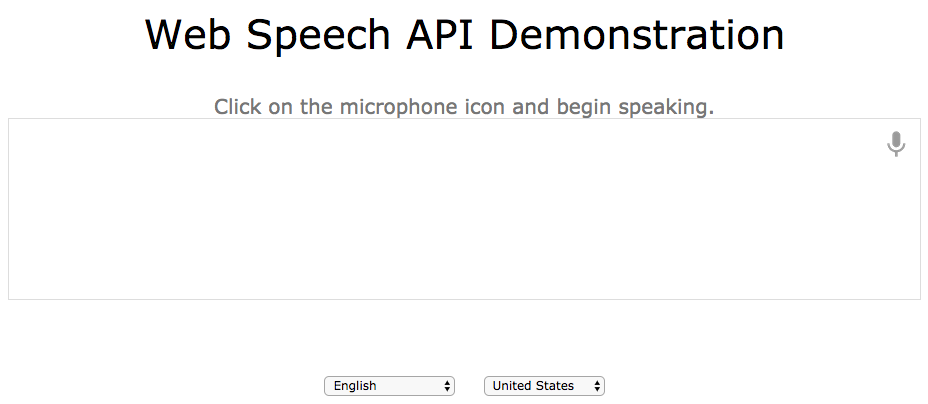

- 1. System Overivew
- 2. Getting Started
- 3. Using the System
- 4. Place News
- 5. Interesting News
- 6. Error Fixing
User's Manual
1. System Overview
This is a voice-drvien web application, which provides services for recommending social news for you.
When you are driving your car, the application could tell you some personalised news, which you might be interested.
According to your location, the application also could provides local news for you so that you could know more about your surroundings.
I hope you could enjoy your time with these services.
2. Getting Started
After you start your car, the system will automatically start, showing the interface as follows.
If you hear some voice like "Hello Sir, How are you doing today", it means the system has successful started. The voice could be different according to your configuration and the history of your conversations with the system.
3. Using the System
 This is an intelligent system so that normally the system could predict what you want to know about from the social network. It will identify suitable news for when you are driving in somewhere.
This is an intelligent system so that normally the system could predict what you want to know about from the social network. It will identify suitable news for when you are driving in somewhere.
All you need to do is to tell the system that you want to hear or now. You could directly tell the system yes or not. Or you could put your opinion on it like "that sounds great". The system could intelligently know you want to hear or not based on your words.
Of course, you could ask a question or give commands. All you need to do is just say to the sytem. The system would give different response based on your question or command.
To use the system, all you need to do is to say to the system. You could ask a question and say something you want to the system.
The more you interact with the system, the more intelligent the system will be.
There is no need for you to operate the interface during all these processes. Therefore, you could safely drive on the road without interruption or distraction from the system.
I hope you could enjoy your trip and interesting news in the same time.
4. Place News
One function of the system is that it could recommend some news about local places.
When you are driving to somewhere, system would know where are heading based on your history. Then the system would tell you some socail news about the place before you go or arrive that place.
In other way, you also could tell the system that you want to know some news about a place. Then the system would tell you the news according your questions.
5. Interesting News
 Another function of the system is to recommend some interesting news basd on your interested topics. These topics could be inputted during the configuration when you buy it. Or you could add, update or delete during the interaction with the system. You could tell the system directly what you want to do.
Another function of the system is to recommend some interesting news basd on your interested topics. These topics could be inputted during the configuration when you buy it. Or you could add, update or delete during the interaction with the system. You could tell the system directly what you want to do.
Normally, the system would give these news when you are driving to the place. The system would tell you what other people talk about the topic in the local area.
If you want to want to know more about it, you could directly say to the system.
6. Error Fixing
 Sometime the system may be response slowly due to the problem of the internet or others, but it doesn't mean error. Normally, the system would tell you that it is working.
Sometime the system may be response slowly due to the problem of the internet or others, but it doesn't mean error. Normally, the system would tell you that it is working.
But if the system still could not get the result, it will automatically abandon the task and say sorry.
In this case, the option you could is that try to do it again later. For example, if the system can't get the result due to the speed of the internet, you could try it again after you get to a place where the signature is strong and speed of the internet is better.
The system is prefect. It is rarely that there will be some errors. Unfortunately, it did happen somehow.
If this case happen, you could try to say different things to the system. The system would try turn back to the process.